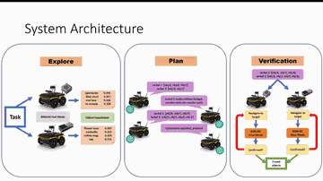
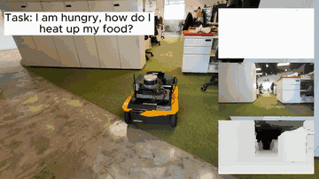
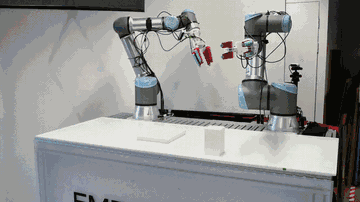
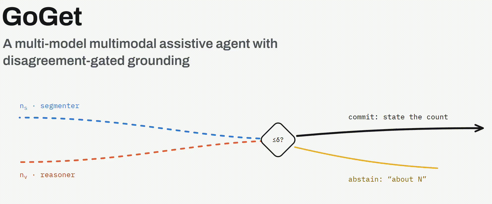
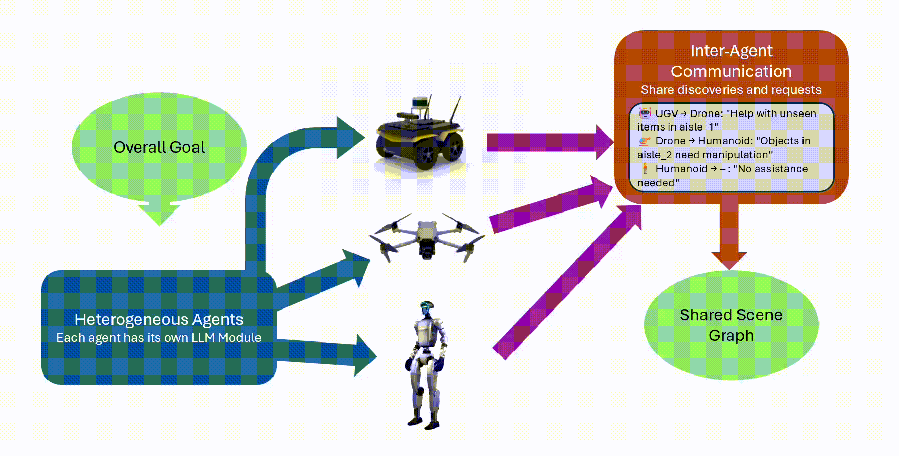

|
A Manicka Praveen I am currently pursuing a Master of Engineering (Research) at Singapore University of Technology and Design, advised by Prof. Malika Meghjani at MARVL where I am working on decentralized heterogeneous multi-robot coordination for long-horizon tasks using foundation models. I am also working as a Research Assistant under Prof. Pablo Valdivia y Alvarado at the National Additive Manufacturing Innovation Cluster making additive manufacturing processes smarter. Previously, I completed my Bachelor of Engineering in Mechanical Engineering at Nanyang Technological University, where my final year thesis explored zero-shot object detection and referring expression comprehension using vision-language models, advised by Prof. Ang Wei Tech at Rehabilitation Research Institute Singapore. I am actively seeking PhD opportunities, starting Fall 2027, in robotics. Specifically, robots that coordinate and work alongside people! |

|
ResearchThe goal of my research is to build teams of robots that can think and act together the way people do, so that they can be trusted to work autonomously alongside us in the real world. I am especially interested in what changes when people become part of that team. |
Selected Publications(* indicates equal contribution) |
|
 |
Playing to Strengths: Task Distribution for Heterogeneous Multi-Robot Teams using Monte Carlo Tree Search Guided Dialogue
A. M. Praveen, Y. Loo, M. B. Prasetyo, M. Meghjani International Symposium on Robotics Research (ISRR), 2026 SemRob @ RSS 2026 PDF Oral Presentation |
|
 |
Seeing Fast and Slow: Bimodal 3D Scene Graphs for Open-set Tasks
M. B. Prasetyo*, S. V. Thengane*, A. M. Praveen*, Y. Loo, M. Meghjani Under review |
|
 |
Evaluating Physical Safety of Soft Grippers in Adaptive Human to Robot Handovers
V. Rao, V. T. Truong, A. M. Praveen, A. Aurobindo, E. Kanhere, T. Stalin, J. T. Marie, O. Kulkarni, P. Valdivia y Alvarado Under review |
|
 |
GoGet: A Multi-Model Multimodal Assistive Agent with Disagreement-Gated Grounding
S. Shrivastava, A. M. Praveen, M. Meghjani International Conference on Advanced Algorithms and Neural Networks (AANN), 2026 PDF Oral Presentation |
|
 |
LLM-Based Coordination for Heterogeneous Multi-Robot Warehouse Exploration
A. M. Praveen, Y. Loo, M. Meghjani SRRS @ IEEE MRS 2025 PDF Poster |
{kind=link}
{kind=link}
{kind=link}
{kind=link}
{kind=link}
Projects |
|
End-to-End AI Driven Customized Orthosis Design
NAMIC, with Prof. Pablo Valdivia y Alvarado — Completed A Photogrammetry based 3D Scanning and Digital Manufacturing Workflow in partnership with KK Women's and Children's Hospital, Singapore. |
|
|
Conformal 3D Printing on Non-Planar Surfaces
NAMIC, with Prof. Pablo Valdivia y Alvarado — Ongoing Closed-loop multi-robot silicone printing system for depositing material onto non-planar surfaces. |
Competitions |
Service |
Teaching |
Industry Experience |
|
Website template from Jon Barron |